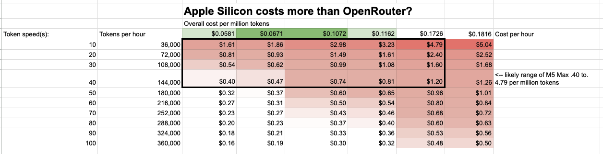

Offline Agentic Coding part 3: Apple Silicon costs more than OpenRouter.
Published 2026-05-17

Apple silicon costs more than OpenRouter.
At ~50-100 watts under load, and ~$0.20 per kWh, my M5 MacbookPro will cost a few cents per hour. Accelerated depreciation (if any) from shortening the lifespan of the device will be more expensive than the electricity. At a few tens of tokens per second this works out to ammortized costs of ~$1.50 per million tokens. Openrouter for comparable models is 1/3rd the price and ~2x the speed.
Electricity
In Northern Virginia my last electricity bill worked out to $0.18 per kilowatt hour. Let's round up to $0.20 per kWh.
EIA has average residential costs for 2025 at $0.1730 per kWh in the US.
https://www.eia.gov/electricity/monthly/epm_table_grapher.php?t=table_5_03
At ~50-100 watts and $0.18/kWh that's $0.009 or $0.018 per hour. $0.02 per hour. $0.48 cents per day for the electricity to be running inference at 100%.
Hardware
A 14 inch MBP with M5 Max and 64 gigs of ram is currently listed as $4299 on the apple website. 128 gigs will cost you more but 64 gigs should run a model like Gemma 4 31b, which is almost anthropic sonnet levels of performance.
For cost allocation, let's consider that this hardware will last 3, 5, or 10 years. The cost per year is $1433, $860, or $430 respectively.
The hourly cost over 3, 5, and 10 years is thus:
- $0.16358
- $0.09815
- $0.04908
Depending on useful lifespan, I think 5 years is a reasonable estimate for normal use. 7 or 10 is very plausible. At maxed out inference 3 years may be a reasonable estimate as well.
Tokenomics
The big question is how many tokens per hour can you get out of a local model. My M5 Max testing seems to be in the 10-40 tokens per second range for a serious model like Gemma4:31b. At 10 tokens per second that's 36000 tokens per hour.
36000 tokens per hour across our 3-10 year lifespan at $0.18 per kwh gives a price per million tokens of $1.61 to $4.79 on the high end.
At 40 tokens per second that's 144000 tokens per hour which gets you to $0.40 to $1.20 per million tokens.
For apple silicon, the hardware cost dominates.
OpenRouter
OpenRouter has Gemma4 31b at ~38-50 cents per million tokens. This means that on the optimistic side (50 watts, 40 tokens per second, and 10 years) the pro max is as cheap as openrouter. On the pessimistic side (100 watts and 3 years at 10 tokens per second) the pro max is 10x the cost. I think ~3x the cost per million tokens is likely the right number for local inference on the pro max from an accounting perspective.
Conclusion
Speed of inference is the biggest factor here though for most cases. Local inference is slower than cloud inference. Some of the gemma 4 providers on openrouter get up to 60-70 tokens per second, which is 3-7 times faster than what I'm seeing with the pro max (~10-20 tokens per second). For a human employee with a work laptop, their salary costs are going to be ~1000x the cost of the tokens they can generate locally. Throwing money at anthropic makes more sense in this context.
It's still wild that a consumer device can run models that are close to anthropic sonnet levels of performance.